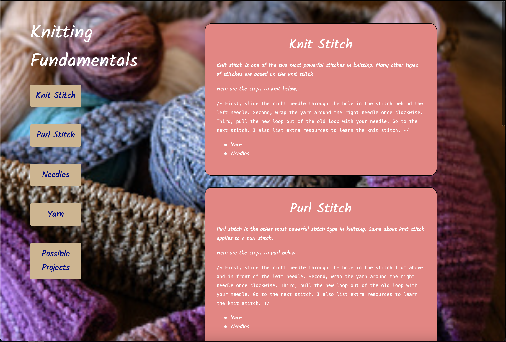
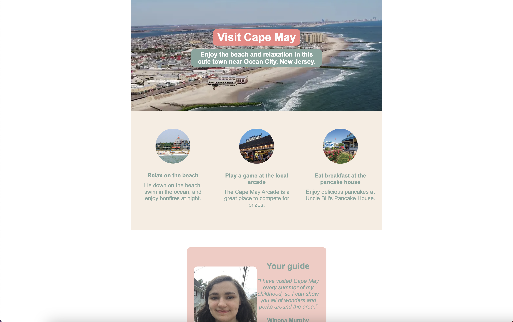
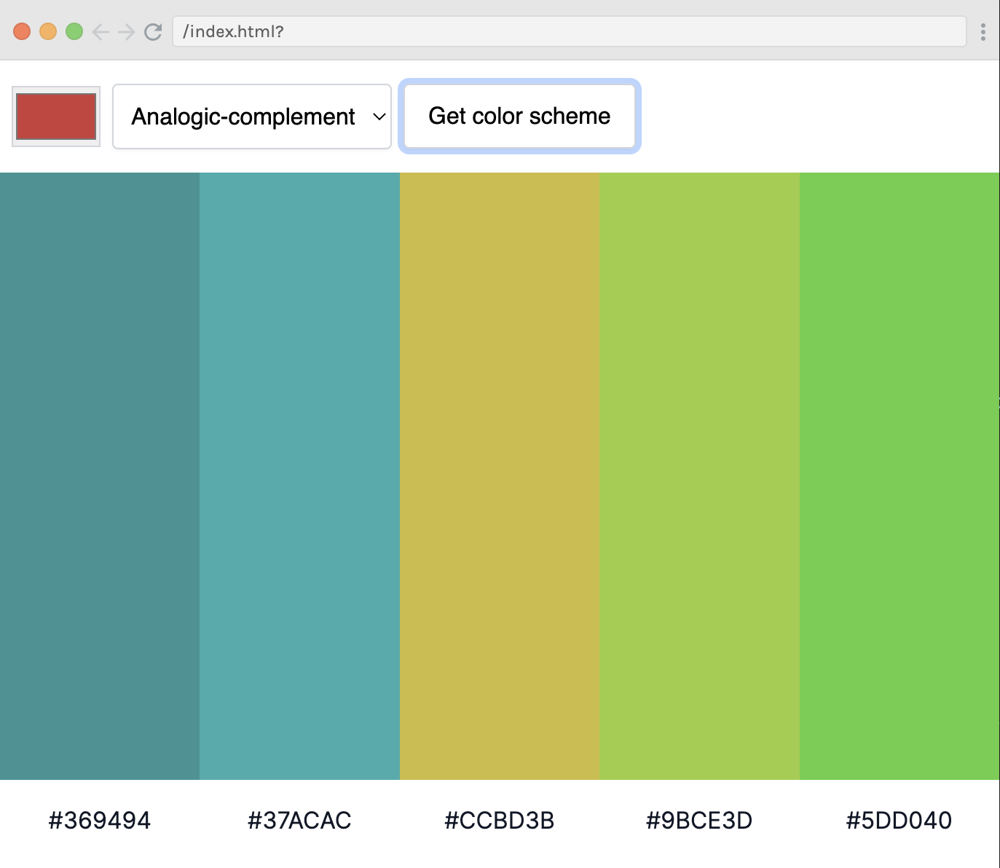

I am Winona Murphy, and I am from the Westchester, New York. I feel invincible when I debug code - including missed semicolons - and excited viewing intuitive designs. Loving both code and design has lead me to Web Development, and diving deeper into the user experience. I currently work as a Web Developer at the Happy Coin, and in my free time, I play with my black cat.
About Me
Scroll to ProjectsBorn and raised in the Westchester, NY area, I grew up in a classical musician family, and studied to be a professional violinist for over 12 years. Once I was in college, I got excited learning how computers worked and planned to make software of my own someday.
After getting my Bachelors degree at Wesleyan, I worked in IBM's Quantum Computing department as a Client Support Developer for 3 years. I met so many amazing people and acquired many essential hard and soft skills, but I wanted to do more. I've been in pursuit of a software development career ever since.
Currently, I'm passionate about web development, including the Frontend and UX design components. It is my dream to build web apps that makes a users' lives easier and more enjoyable.

My top three skills are Javascript, HTML5 and CSS3, but my other skills include the following:
Hard Skills
- Python
- Git/Github
- Tailwind CSS
- Google Cloud Platform
Soft Skills
- Agile
- Design thinking
- Customer support
- Cross-team collaboration
Projects
Scroll to Contact FormKnitting Page
A single page website that talks about the different components of knitting, including the knit and purl stitch, kind of yarn, kind of pattern, and overall project to knit.
I learned how to cleanly and properly use Flexbox to order all my elements, as well as the importance of color contrast and spacing in the visual hierarchy.
Vacation Homepage
A website that describes my favorite vacation spot, Cape May and what to do or see there.
I learned how to navigate Figma, including getting specific values from the design, and got a taste of modern design standards.
Leads Tracker
A Chrome Extension that keeps track of website leads, and can even add the current tab as a lead in the list.
I learned how to create a Chrome Extension, and what Javascript is needed to make it happen.
Color Scheme Generator
A tool using API to create a color scheme with a color picker and a color scheme type.
I learned a lot more about color theory, color palletes and the default HTML color picker.